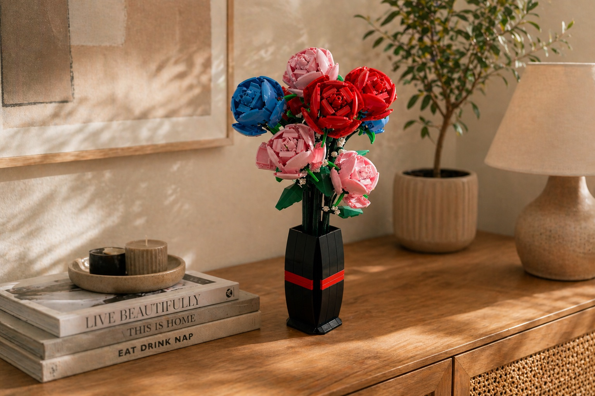

Un moment facile à lancer
Pas besoin de matériel, de préparation ou de compétences particulières: on ouvre, on suit, on assemble.
Guide cadeau
Le bon cadeau créatif doit être simple à recevoir, agréable à faire et assez beau pour rester. Voici comment choisir une attention qui ne finit pas oubliée au fond d'un placard.

Les bons critères
Le piège, c'est d'offrir une activité trop longue, trop compliquée ou trop enfantine. Le bon équilibre: un moment agréable, un résultat valorisant et une vraie place dans l'intérieur.
Pas besoin de matériel, de préparation ou de compétences particulières: on ouvre, on suit, on assemble.
Le cadeau doit produire quelque chose de visible: une décoration, un objet posé, un souvenir concret.
Il doit dire quelque chose: une attention douce, un goût pour les fleurs, la déco ou les moments calmes.
Selon le profil
Ce type de cadeau fonctionne bien pour quelqu'un qui aime décorer son intérieur, construire à son rythme, recevoir une surprise ou simplement prendre une pause loin des écrans.
Occasions
Le bouquet en briques garde le symbole des fleurs, mais ajoute le plaisir du montage et l'intérêt d'un objet durable.
Une box à l'unité suffit pour une attention originale. L'abonnement devient plus marquant si vous voulez prolonger la surprise.
Le bouquet garde le geste floral, mais il ne fane pas. C'est une alternative plus créative aux fleurs classiques.
Le côté déco prend le dessus: une fois montée, la composition reste exposée dans l'intérieur.
Prêt à offrir ?